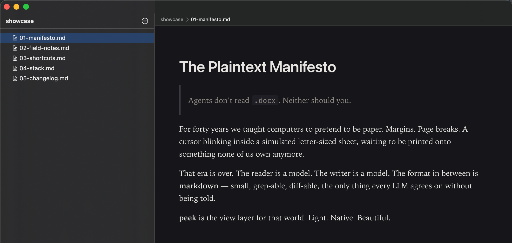

p.peek
markdown, natively.
Agents don't read .docx. Neither should you.
$ peek README.md
$ peek ./docsA light, native macOS markdown viewer. ~2 MB binary, sub-300 ms cold start, WebKit-native typography. Nothing Electron touched.
or
brew install --cask rsdrahat/peek/peek

Tiny
Single-digit megabytes. No Chromium, no Node, no runtime.
Native
⌘F, print, smooth scroll, VoiceOver — delegated to WebKit.
Beautiful
Serif body, sans headings, real vertical rhythm. Auto dark mode.
Install
git clone https://github.com/rsdrahat/peek.git
cd peek
make app
open .build/peek.appKeys
| ⌘O / ⌥⌘O | open file / open folder |
|---|---|
| ⌘F | find in page |
| ⌘R | reload |
| ⌘⇧O | toggle outline |
| ⌘⇧D | toggle light/dark |
| ⌘= ⌘- ⌘0 | zoom |
| ⌘P / ⌘⇧E | print / export PDF |
| j k h l | vim-style sidebar nav |
Roadmap
- shipped v0.1 MVP — render, watch, theme, GFM, drag-drop
- shipped v0.2 Polish — window/scroll memory, zoom, print, export
- in progress v0.3 Folder mode — sidebar tree, vim nav, breadcrumb, inter-doc links
- next v0.4 Editor — split view, live preview
- later v0.5 Themes — presets, custom CSS, fonts